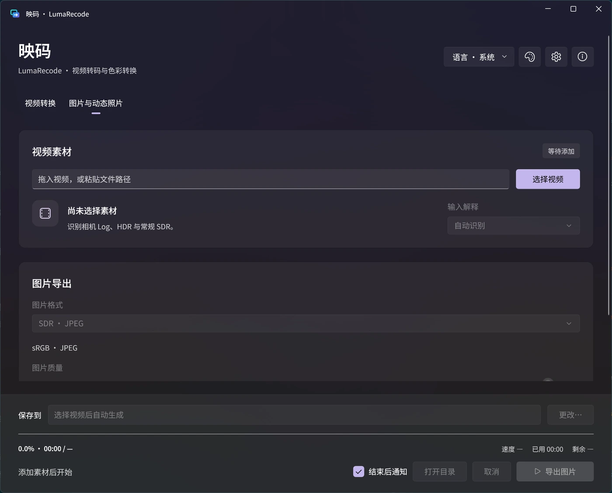

Windows
Windows 11 · x64 或 ARM64
选用 Native AOT 便携 ZIP、单文件 EXE 或 MSI。转换前安装 FFmpeg 和 ffprobe。
下载 Windows 版
将相机 Log、HLG 或 PQ 转成 HDR 或 SDR。编码前查看素材色彩信息，或选择适合当前素材的 LUT。
播放素材、拖动时间轴或逐帧移动，精确选定导出的起始帧和结束帧。
快速分享使用设备上可用的硬件编码器。归档时可选择软件编码。

Windows 可导出 Ultra HDR JPEG 和 Android 动态照片。macOS 可导出 HDR HEIC、Adaptive HDR HEIC 和 Apple 实况照片。
查看平台功能Windows 11 · x64 或 ARM64
选用 Native AOT 便携 ZIP、单文件 EXE 或 MSI。转换前安装 FFmpeg 和 ffprobe。
下载 Windows 版macOS 27 或更新版本 · Apple 芯片
FFmpeg Full DMG 已配备转换工具。已安装 FFmpeg 时，也可以选择标准 DMG。
下载 macOS 版